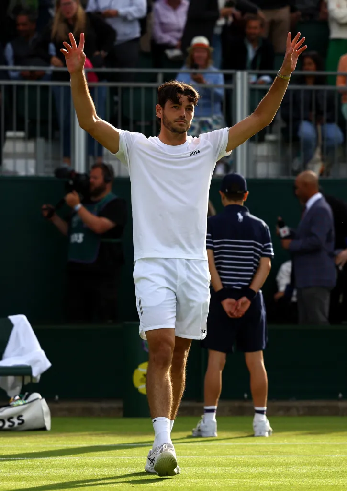
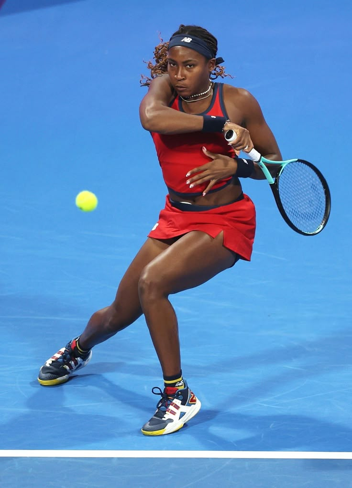

THE SUMMER 2025 US OPEN
Where A New Champion Awaits
About
The US Open is finally back in New York City! The greatest players from around the world will gather in Flushing Meadows - Corona Park to capture the coveted US Open Grand Slam Title. For the die-hard tennis fan, or the casual watcher looking for a good time, be sure to attend some matches, and don't miss out on the jam packed action!
Event Schedule
Over the course of two weeks, a lot is bound to happen. Here are some things you should know:
- The two-week tournament starts Sunday, August 24th, 2025 to Sunday, September 7th, 2025
- Fan week starts Monday, August 18th, with gates opening at 10:00 AM EST
- Here you can watch qualifying matches, as well as the Mixed Doubles matches
- The Women's Championship Match will take place Saturday, September 6th at 3:00 PM EST in Arthur Ashe Stadium
- The Men's Championship Match will take place Sunday, September 7th at 3:00 PM EST in Arthur Ashe Stadium
Additional Links
US Open Official Site
